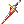

HD Quality's Rune Knight Guide
Jump to navigation
Jump to search
| This guide currently sucks. |
|---|
| 14/01/2019 - Work In Progress, please ignore it for now. |
| Rune Knight | |||||||||||||||||||
|---|---|---|---|---|---|---|---|---|---|---|---|---|---|---|---|---|---|---|---|
| Job Base: | Swordsman | ||||||||||||||||||
| Written By: | HD Quality | ||||||||||||||||||
| |||||||||||||||||||
Rune Knight
Introduction
- Rune Knight, one of the two possible final evolutions of the Swordman Branch.
- "Once upon a time, a old Knight found a rune that gave him the power to talk with dragons. Seeing this, he tried to use this new power to tame strong dragons and look the coolest warrior in all Midgard and beyond. He was a Knight and Knights are strong, right? He thought that too but soon realized that pure Dragons are scary and strong beasts full of divine power that belong to another league and can't be tamed.
- Seeing this, our knight, after failing to tame an Ancient Dragon a couple of times and understand the limitations of his power, decided to start all over again from step one with weaker creatures.
- Novus were easy to tame, and so were petites, but they were weak and totally uncool to his friends so, noticing that this power was each day more like a curse, he remembered the old and often forgotten Abyss Lake Kingdom where a special type of creatures lived in conflict with others - The Ferus, the supreme dragon-like beast." - Not a true RO Story
Class in a nutshell for most players
- Rune Knight, also known as RK, is mostly know by:
Hundred Spears - Burst Damage with a gigantic cooldown
Crush Strike +
Auto Counter = I look into your eyes and you die
Dragon Breath and
Dragon Water Breath - The two skills that needs
Bragi to look good to kill packs of mobs
Ignition Break - The "No Bio 5 Headgear, no use" for most players
- Berserk + 100-120 Crit = Some things die fast
- And while most of this info isn't exactly wrong, it's also not exactly right. Lots of info is missing here about the class that ditched the inferior Pecos to the inferior Rebellions *cough* not really *cough* they're quite strong and fun to play *cough* to mount the superior dragons.
- Damn, I really need to get another pack of Throat Lozenge - Small Curiosity.
Leveling Guide, Stats & Skills
- Before we talk about our Rune Knight, we need to level it to that point so let's start it with a optimized guide to get that done fast.
- In case you get lost, type the @navi commands we post in the guide to guide you through the world of NovaRO.
- Also remember that this is just a suggestion. Maybe there are better ways to level your character but this should at least help you to understand how the character works while at the same time levelling at a decent rate and even discover the game and the server if this is the first time you play it.
- While this section of the guide tries to be newbie friendly, it doesn't helps you to understand the game if this is the first time playing it. If that's the case, after making a new character, simply enter the warp and ignore what is written in the Novice Section. You will thank me later!
- Since this is your first time playing this game, you should also check the following pages to help you understand it:
Stats: Basic Edition
- Before jumping into the main sauce of our steak, let's just give a basic look at our stats to understand how things work while we level our new baby. The following details are really simple and only provide you a basic understanding of how the character works in this specific class and nothing more.
- An advanced, and a lot more detailed, version is available here.
- STR : Known as Strength, it's the main source of our damage. You put points here and you get more damage (ATK).
- AGI : Known as Agility, it's what gives more attack speed (ASPD) and flee (FLEE) to evade physical damage from enemies.
- VIT : Known as Vitality, it's what gives you a higher value of maximum Health Points (HP). More HP means that you can survive more hits from the enemy.
- INT : Known as Intelligence, it's what gives you a higher value of maximum Special Points (SP). You can see it as the energy you've left to use skills. If you don't have enough energy to use a skill (pay the cost to use it), you can't use it.
- DEX : Known as Dexterity, it's what increases HIT, the value that will be compared with the enemy's FLEE to know if you HIT or MISS.
- LUK : Known as Luck, it's what increases your critical chance to hit a monster with +40% damage. This chance, unfortunately, doesn't work with the skills from the Swordman Branch.
Leveling Guide & Skills
Novice
- As a Novice, we need to get job level 10 to get the first class of our trip so let's get done fast.
- While the class has a few skills, we won't stay here for long so let's ignore them. If you wish to know more about them, check the following link.
- Type @go Izlude in your char and buy a red potion from the Tool Dealer close to where you spawn (@navi izlude 120 153).
- Go up a bit and talk to the npc at your left with a flashing quest emote over its head (@navi izlude 115 181).
- Choose "Ok I'll listen!". Talk to her again, pick "Experience Training", give a few enters and finally pick "I will do it."
- Talk to her again and bam, job 10 is done. Spend all your points in the
Basic Skill and it's time to change to a cute Swordsman.
Swordman
- First thing to do to get our Swordman is to go to the job changer.
- Click on the Warper (the npc used to fast-travel in RO to all the big and important places) (@navi izlude 118 165) and choose Save. This is now your saving/loading point. The place where you appear when you die (this will be useful later). You can change this later to another town but for now let's use it as our starting point.
- Click on the Warper one more time and scroll down until you see "~ Special Areas". Press enter and in the new menu pick Main Office. We're now at the "Hall of the Hotel called NovaRO" where you can reset, remove cards, change builds in a few seconds, get your daily gold coins, and more (for more info, check this page Main Office).
- Look for the Job Changer (@navi npc_in 120 40) and click on him. He will give you all the possible choices of classes. Pick the Swordman.
- If everything went as we told, you should be by now officially a Swordman. Time to start talking about our Swordman's Skills.
Swordman Skills
Sword Mastery
Max Level Skill Type Info Notes & Tips Recommended Level 10 Passive
- Increases your attack with One-Handed Swords and Daggers
- Yes, it also works with a dagger even if it says sword.
- Since it's Mastery Attack, it's extra attack that isn't affected by cards or gears. So, due to that, it's pretty much useless.
- Get Level 1 as a requirement for
Two-Handed Sword Mastery and forget that it even exists.
Level Mastery ATK Bonus 1 4 2 8 3 12 4 16 5 20 6 24 7 28 8 32 9 36 10 40
Max Level Skill Type Info Notes & Tips Recommended Level 10 Passive Increases your attack with Two-Handed Swords
- Same thing as Sword Mastery but exclusively for Two-Handed Swords.
- For now just think about what you want to play later:
- - Level 1 if you care about
Spears
- - Level 10 if you care about
Two-Handed Swords
Level Mastery ATK Bonus 1 4 2 8 3 12 4 16 5 20 6 24 7 28 8 32 9 36 10 40
Increase HP Recovery
Max Level Skill Type Info Notes & Tips Recommended Level 10 Passive
- While not moving, it heals your character each 10 seconds.
- Increase the power of Healing Items.
- One of the passive skills that defines the class as fat.
- By healing more with potions than other classes, you can eat more damage than any other. This also means that some players will expect you to tank, lure, and mob with some Potions in your Inventory to prevent undesirable results/deaths.
- This increase of power in Healing Items stack with the added benefits from having higher values of VIT.
- Always max this skill.
- Not maxing it makes no sense and will only make you look bad if someone asks about it.
Level HP Recovery Bonus Healing Item Bonus 1 5 + 0.2% of MAX HP 10% 2 10 + 0.4% of MAX HP 20% 3 15 + 0.6% of MAX HP 30% 4 20 + 0.8% of MAX HP 40% 5 25 + 1.0% of MAX HP 50% 6 30 + 1.2% of MAX HP 60% 7 35 + 1.4% of MAX HP 70% 8 40 + 1.6% of MAX HP 80% 9 45 + 1.8% of MAX HP 90% 10 50 + 2.0% of MAX HP 100%
Bash
Max Level Skill Type Info Notes & Tips Recommended Level 10 Offensive
- Single target Physical Damage Skill with extra chance to hit the enemy.
- The skill you want to spam in the earlier levels to get monsters killed.
- If your HIT is a bit low, this skill, at Level 10, makes you shine because of the way it works:
- - It adds 50% of your HIT value to final HIT chance of the skill.
- - This means that if you've 70% HIT Chance, it ends being a 105% HIT Chance.
- 70+(70/2)=70+35=105 - and instead of having the chance to miss, you will hit.
- Max it to level faster as a Swordman.
- It will let you unlock
Magnum Break to boost the damage of all your attacks and skills (more info below).
Level Damage Extra HIT 1 130% 5% 2 160% 10% 3 190% 15% 4 220% 20% 5 250% 25% 6 280% 30% 7 310% 35% 8 340% 40% 9 370% 45% 10 400% 50%
Max Level Skill Type Info Notes & Tips Recommended Level 10 Offensive Area of Effect Physical Damage Skill that boosts, for 10 seconds, your following normal physical attacks and skills
- This skill pushes every single non-boss protocol enemy back 2 cells inside its area of effect.
- If the enemies aren't in the 3x3 area surrounding the player that casts the skill, the damage given is reduced.
- Maxing this skill increases the area of effect to 9x9. This makes it decent to activate some status effect, such as curse or bleed, from your gears and cards.
- Due to its decent area when maxed, it's also fairly decent to grab the attention of monsters to yourself when mobbing or in case they swap targets. It's also good when
Provoke doesn't work as in the case of undead race type or boss-protocol monsters.
- Every single physical attack or skill the player does in the following 10 seconds after its use gets a boost of extra 20% Fire Property Damage. This means that a Fire Property Attack of 3.000 may end as 6.600 against a monster with a weakness vs fire of 200%!
- Max it right after maxing
Level Damage Extra HIT 1 120% 10% 2 140% 20% 3 160% 30% 4 180% 40% 5 200% 50% 6 220% 60% 7 240% 70% 8 260% 80% 9 280% 90% 10 300% 100%
Max Level Skill Type Info Notes & Tips Recommended Level 10 Support
- Tries to get the attention of a monster by increasing its attack in exchange for less defence.
- It has a chance to fail.
- It's useful to stop skills with casting bars (doesn't work vs boss-protocol monsters) since it forces the monster or players to change attentions.
- When you use it on a player or a monster, it's considered as giving damage, a hit, so it can be used to activate skills from cards and gears or to teleport monsters locked in traps or webs.
- This skill doesn't work against undead nor boss-protocol monsters.
- It's useful for the -% def or when you're luring and want the monster that doesn't care about anything but its life to follow you.
- It's also a nice skill to use before
- I advice 5 since it's the requirement for other skills and points aren't enough.
- Later on, when you start playing as a lurer as a Knight and the following branches, you may want to reduce some levels on
- This really depends if you enjoy using it or prefer something else (one of the skills from the Knight branch should clarify this point of view).
Level DEF decreased ATK increased Success Rate 1 10% 5% 53% 2 15% 8% 56% 3 20% 11% 59% 4 25% 14% 62% 5 30% 17% 65% 6 35% 20% 68% 7 40% 23% 71% 8 45% 26% 74% 9 50% 29% 77% 10 55% 32% 80%
Endure
Max Level Skill Type Info Notes & Tips Recommended Level 10 Support
- Prevents flinch for limited or until 7 hits are given.
- Increases MDEF while it's active.
- This limit is ignored if the hits come from a player.
- Doesn't work in WoE outside of the MDEF buff.
- Endure makes your character keep doing its stuff like nothing touched it so it's useful to gather monsters to the party kill and to help youselft to eject yourself from bad near-death situations.
- The scaling with levels is really bad since the 7 hits limit is the same with level 1 or 10. While it may seem like a big difference now, later you will see that it won't mean much.
- Since it's a skill with limited use, Level 1 is more than enough for now and in the future.
- In case you care about a a future skill in the Lord Knight branch, please, level it to Level 3 and call it done.
Level MDEF increased Duration 1 1 10 seconds 2 2 13 seconds 3 3 16 seconds 4 4 19 seconds 5 5 22 seconds 6 6 25 seconds 7 7 28 seconds 8 8 31 seconds 9 9 34 seconds 10 10 37 seconds Remaining points tip:
But every class in Ragnarok Online also have special skills unlocked by quests (known and referred as Platinum Skills) and our Swordman isn't any different. The thing is that in NovaRO, if you don't want to do those quests, talk to the NPC next to where you change from Novice to Swordman and unlock all them right away. Some of those quests are really tedious and hard to do as a new player so there is no shame on unlocking them right away.
Skill Skill Type Info Notes & Tips Passive
- Having Fatal Blow unlocked makes
- It's a very strong buff early on with
Moving HP Recovery Passive
- Character regenerates HP while walking.
- Rate is 50% of standing recovery, and not affected by Increase Recuperative Power skill.
- Not much to be said here. If you need HP and don't want to use lots of pots to empty your zenny wallet, you can sometimes sit and see your HP regenerate a bit faster when compared to other classes. It does end being helpful with a future skill to regen HP really fast but for now it's just here as a "Yes, I've it".
- It works even if you're with 70% or 90% weight, a condition that disables your natural regen but nothing that most player will even care.
- Remember to never depend on it. Unless you really need to conclude something like an instance, it's a skill that only makes you waste time. Instead try to see what you're doing wrong, experiment your current build with a few changes, etc. This is a skill that you should NEVER see it as an excuse to not use potions.
Auto-Berserk
Toggle Buff
- When your HP goes below 25%, you gain the effect of Provoke Level 10 on yourself. This means that you get +32% ATK and -55% VIT DEF.
- Drains 5 SP each 10 seconds.
- The effect lasts until the character returns to more than 25% HP and will work even with 0 SP.
- This buff can be toggled.
- It's a risky buff that improves a lot mid-stage levelling and also some end game builds.
- Using it while levelling is a personal preference since it depends a lot on builds and the role playing.
- Always remember that the SP drain may be undesirable in the early levels.
- After all this block of info it's time to get back to action and work on our path to Knight.
- First we will work on our stats to make our levelling a breeze.
Stats
- Open the stats window (alt+A). If you checked the section about Stats, you should be aware that it should be focused, at least, on STR with some DEX. You're right so let's work on that.
- We will start with DEX since without enough HIT you will miss and make levelling slower. Add enough to get ~200 HIT.
- With the remaining points, add them to STR.
- Now let's go to the equipment part.
Equipment
- Since we're playing a new char without anything, there isn't much to do here but to enjoy the free starter pack we got when we changed to a cute Swordman.
- Open your inventory (alt+B) and you should notice that you now have a Novice Package item there (ignore the rest for now) (at the I tab, Items Tab).
Quick Advice:
- The Novice Package is an item that can be opened as you level. Always right click after opening to check the next level if you miss the warning through the guide.
- Open it and drag and drop the 200
Novice Potion and the 50
Novice Fly Wing to the hotkeys' bars.
Tips for new players:
- F12 pressed 4 times to fully open the hotkeys menu in case it's hidden.
- You can customize every single key of it by pressing ESC and pick Shortcuts.
- Those keys can be used exclusively with battle mode activated.
- Battle Mode is activated when your chat box has nothing typed and you press enter to hide the typing box. A new enter disables it.
Click at the E tab (Equipment Tab) and equip the Ring of Experience to make the leveling faster as well as the Spear you've there. Get out of the Main Office by walking all the way to the right and enter into a portal. You're now in Prontera, the main town of the World of RO. Look for a Warper as you did in Izlude (@navi 153 192) but this time pick "~ Dungeons" and in the new menu pick "Payon Dungeon". You should be now in your first big dungeon. Time to kill some monsters :D Leveling
- Attack each zombie you see on the way and spam the Novice Potions whenever you get damage.
- Don't forget to add points to your skills! And maybe stats too although you can perfectly leave that for later.
- Repeat this until you're Level 26.
- Free Starter Package Warning: You can now open the next phase of it since the level required is 25. Use them as you need but remember to only use the potions after using the ones from the previous tiers since this ones heal a bit more.
- As soon as you hit Level 26, type @go Eden in your chat. You're now in Eden, the Levelling Office of Ragnarok Online.
- You should notice that there is a lot of players here looking for parties and members. Hold on your horses, you're not ready for that yet. Just walk North for now and talk with Secretary Lime Evenor (@navi moc_para01 27 35).
- Choose "Join the Eden Group".
Special Note:
- If for some reason the npc says that you're overweight, it means that you've to do one of the following things until you've < 50% weight (you can check the weight of your character at the HP/SP menu at the top left menu of your screen):
- - Sell some items in the inventory at the tool dealer(@navi moc_para01 21 21)
- - Store some at the Kafra Employee or Storage Service, the storage of the account(@navi moc_para01 36 17)
- Congratulations! You are now part of Group Eden! and with it you got the
Eden Group Mark, an item that when used will teleport you to this fabulous place (more info later on).
- Since you're now part of a great group, time to make a few modifications. Time to add a few points to our character if you haven't done yet and also get a neat bonus from the Main Office if you haven't yet.
Advice on stats:
- Add a few more points to DEX until you have a base of 30 and then spread the rest on VIT and STR according your personal needs.
- While the DEX isn't yet needed, you will need it later.
- If you already added them and you don't meet the recommended 30 DEX, don't worry. You can fix as you're levelling in the following levels. We're still in the early stages of our character and if you do some mess, you can fix it later by resetting the stats at the main office.
- After adding the necessary points on stats and skill, we can also get a few more from the Main Office, the place where we changed to Swordman. Click on the Warper (@navi moc_para01 34 18) and let's go back to the Main Office.
Quick Reminder:
- Click on the Warper (the npc used to fast-travel in RO to all the big and important places) and scroll down until you see "~ Special Areas". Press enter and in the new menu pick Main Office.
- In the Main Office, go to @navi npc_in 132 21 and you will find 4 npcs that will offer you a few bonus for joining their clan:
- Devon Aire - STR +1, VIT +1, MAX HP +30, MAX SP +10
- Raffam Oranpere - INT +1, DEX +1, MAX HP +30, MAX SP +10
- Berman Aire - INT +1, LUK +1, MAX HP +30, MAX SP +10
- Shaam Rumi - DEX +1, AGI +1, MAX HP +30, MAX SP +10
- Pick one of them that suits your build. You got now a nice bonus to help you play the game.
Advice on the Clan Bonus:
- While you can get this as soon as you play the game, it may look as too much info to someone new to the game so it was ignored until now.
- Be aware that you can change between clans (don't mix them with guilds) whenever you want so feel free to try them.
- They clash with guilds in the sense that you can't change between them with a clan bonus active but you can leave a clan, join a guild, and come back to get it back. There is no restriction to how many times you can join or leave them.
- There is no other bonus outside of being stats and extra HP and SP. Not even a quest. But there is some lore related to it if you're one of those players that enjoy it even a bit here and there.
- The bonus may not look much at the moment outside of the HP bonus but it's actually very important in the end game since 1 point here and there may mean a lot to some builds.
- Now that you feel refreshed and bit stronger, you can now aim to higher grounds. Let's get a quest to get a few gears and levels to help us in our long journey. Let's go back to Eden either by typing @go Eden or by using
- At the left of the NPC where we got
- Talk to Instructor Boya (@navi moc_para01 25 35) and accept her quest. If you followed this guide until now, you're Level 26 and she will give you an easy to do quest to get a few levels and free gear. You're still naked and far from the Max Level 175, right?
- She will tell you to go back to our beloved Payon Dungeon and talk with an Eden Member outside called Karl so let's do that.
- Use the Warper close to where you're (@navi moc_para01 34 20) and
- - if your Last Warp is still pay_dun00, pick that option
- - if not, pick ~ Dungeons and in the new menu pick Payon Dungeon
- Inside, go into the warp portal and look for Eden Member Karl (@navi pay_arche 41 135) in this new place.
- Talk to him and he will give you the quest to kill 15 Skeletons inside Payon Dungeon and then go back to him. Let's do that!
- Quick Advice:
- Skeletons aren't hard but they require a considerable value of HIT to be killed thus the warning in advance until now to pump a few points in DEX. If you haven't until now, this may be a challenge to your recently created character.
- Also don't forget to use the potions you've with you, they exist for this exact moment - levelling!
- After dealing with the Skeletons, Eden Member Karl will tell you that this wasn't enough and ask you to kill 10 Poporings. Not an hard task although they may hit a bit hard so keep remembering to hit that potion button and even use the ones you got recently!
- After finishing this monster massacre, Karl will congratulate you and tell to go back to Instructor Boya. Let's go that with our
Knight
- Lots of words here
- Big text inside
High Novice
- Same thing as the novice but you start with 100 extra points and 25% extra HP and SP.
- Go to the map South of Prontera (@navi prontera 156 22) and kill a few monsters until you get job 10.
- After that you either do @load or @return to go back to our save point (See? I told that it would be useful!) and then use the Warper to go back to the Main Office. Alternatively you can always walk back since you aren't far from there.
Quick Reminder:
- Click on the Warper (the npc used to fast-travel in RO to all the big and important places) and scroll down until you see "~ Special Areas". Press enter and in the new menu pick Main Office.
- Look for the Job Changer (@navi npc_in 120 40) and click on him. He will give you the option to change to an improved in stats, but still cute, Swordman called High Swordman.
High Swordman
- Congratulations, you're now a High Swordman!
- Since this new class is the same as the Swordman but with improved stats and HP/SP values, we already know everything about this class, right? Then it's time to skip it since we're doing nothing here.
- If you followed this guide, you should have a certain quest started in Port Malaya awaiting to be concluded. What about doing it now?
- Type in your chat @go Port Malaya and go to the top of the map to talk with Munbaki(@navi malaya 185 358) and finish your quest (you may want to use a few
Fly Wings to get there faster).
- Congratulations, you're now a High Swordman with a Base Level of 70 and something (depends on your base level when you finished the quest but expect something around 70 to 78) and Job Level 50 (max we can get). You're 100% ready to change to a fantastic Lord Knight!
- Now you've two options:
- Type @load or @return to go back to our save point and let's use the Warper one more time to go back to Main Office.
- Type @go 0 or '@go Prontera and walk to the Main Office.
- Both work so just pick the one you're more used to go to the Job Changer and change to our fantastic Lord Knight!
Quick Reminder:
- Job Changer hangs out at @navi npc_in 120 40 at the Main Office.
- You're now a Lord Knight! Hurray! One step closer to be a Rune Knight!
Lord Knight
- Almost there!
- You're now a magnificent Lord Knight and this means new skills to try!
Rune Knight
- Lots of words here
- Big text inside


Stats: Advanced Edition
- This section isn't mandatory to have FUN in the game but if you want to delve a bit more into it, it may help you a ton.
- Each stat has a brief explanation of what they do. And if you expand each of them, you get access to a detailed version.
- Values explained use the current max level, 175, as a base.
- STR : Strength is what increases your physical damage and the maximum weight of your character.
- Each point spent here will increase the damage of pretty much everything besides Dragon Breath in a Rune Knight.
One point spent here increases:
- Status ATK + 1
- Weight Limit + 30
- Hidden Weapon ATK + 0.5%
- 100 Total STR Gives Immunity to:
- Nothing.
- 204 Total STR Gives Immunity to:
- Break from
Joint Beat.
- If you play PvP/WoE/BG, each point :
- Reduces the time in
Vacuum Extreme.
- Reduces the time in
White Imprision.
- Reduces the chance of getting Break from
- Indirectly reduces the chances of getting Masquerade.
- Each 100 weight in Max Weight - Current Weight reduces the chances by 1%.
- AGI : Agility is what increases your FLEE and ASPD (attack speed).
- And also reduces the animation delay and SOFT DEF.
Each point spent here increases:
- FLEE + 1.
- Each five points spend here increases:
- SOFT DEF + 1 (the X in DEF X+Y).
- 100 Total AGI Gives Immunity to:
- Bleeding
- Sleep
- If you play PvP/WoE/BG:
- Each point reduces the chances to be affected by Masquerade by a random value from 0.17% to 0.33% (also depends on the SC's stats)
- Extra Notes:
- While adding points here increase your ASPD, it's not something that you can simply say ADD X to get +1 ASPD, it depends a lot on your gear, stats and consumables active.
- You can read more about it in here or check the following explanation:
- Lots of words here.
- Since increasing AGI also increases your ASPD, this means that this stat also reduces the ANIMATION DELAY of attacks and skills.
- This doesn't mean that your AFTER CAST DELAY will be shorter, it means that you can cancel/re-use skills faster since the animation will be smaller.
- This only matters to skills that don't have a forced cooldown and/or the ones with AFTER CAST DELAY based on ASPD, the ones you can reduce the delay to zero with
- An easy way to check/test is to try it with Bowling Bash with 1 AGI/130 DEX and 130 AGI/DEX. You will notice a tiny difference between them.
- VIT : Vitality is what increases your Health Points (HP).
- Each point spent here will make you able to survive more damage.
Each point spent here increases:
- MAX HP +1%.
- Healing Items effectiveness +2% (HP Healing Values).
- Each five points spend here increases:
- SOFT DEF + 1 (the X in DEF X+Y).
- Each five points spend here increases:
- SOFT DEF + 1 (the X in DEF X+Y).
- HP Recovery Rate +1.
- 100 Total VIT Gives Immunity to:
- Stun
- Blind
- Poison
- Deadly Poison
- If you play PvP/WoE/BG:
- Reduces the duration of Burning as well as the chances of getting it.
- Reduces the duration of Freezing as well as the chances of getting it.
- Reduces the duration of Howling as well the chances of getting it.
- Reduces the duration of Crystallization.
- Extra Notes:
- Always try to at least get 100 Total VIT (100 base or more depends on the build), it makes life easier to both you and the party you're playing with.
- It makes no sense, outside of a farming PVM build where nobody cares about HP, to not met this condition.
- INT : Intelligence is what increases your magical damage and have more Special Points (SP) to cast skills.
- Each point spent here also helps you cast skills faster.
Each point spent here increases:
- Status MATK + 1.5
- MAX SP + 1%
- Healing Items effectiveness +1% (SP Healing Values).
- Decreases variable cast time (Instant Variable Cast Formula is DEX + INT*2 = 530).
- Each two points spend here increases:
- SOFT MDEF + 1 (the X in MDEF X+Y).
- Each six points spend here increases:
- SP Recovery Rate + 1
- 100 Total INT Gives Immunity to:
- Silence
- If you play PvP/WoE/BG, each point :
- Reduces the duration of Abyss Curse.
- Reduces the duration of Deep Sleep.
- DEX : Dexterity is what increases your HIT and makes you cast skills faster.
- Each point spent here also helps a bit to get higher values of ASPD and MATK.
Each point spent here increases:
- HIT + 1
- Decreases variable cast time (Instant Variable Cast Formula is DEX + INT*2 = 530)
- Each five points spend here increases:
- Status ATK + 1
- Status MATK + 1
- SOFT MDEF + 1 (the X in MDEF X+Y).
- If you play PvP/WoE/BG:
- Reduces the duration of Freezing as well as the chances of getting it.
- Each point spent here reduces the chances of being affected by:
- Full Strip
- Rogue Individual Strips
- Earth Strain
- Weapon Crush
- Extra Notes:
- While adding points here increase your ASPD, it's not something that you can simply say ADD X to get +1 ASPD, it depends a lot on your gear, stats and consumables active.
- You can read more about it in here or check the following explanation:
- Lots of words here.
- Since increasing AGI also increases your ASPD, this means that this stat also reduces the ANIMATION DELAY of attacks and skills.
- This doesn't mean that your AFTER CAST DELAY will be shorter, it means that you can cancel/re-use skills faster since the animation will be smaller.
- This only matters to skills that don't have a forced cooldown and/or the ones with AFTER CAST DELAY based on ASPD, the ones you can reduce the delay to zero with
- An easy way to check/test is to try it with Bowling Bash with 1 AGI/130 DEX and 130 AGI/DEX. You will notice a tiny difference between them.
- LUK : Luck is what increases CRIT.
- Each point spent here also helps a bit to get higher values of ATK, MATK, FLEE, PD and HIT.
Each point spent here increases:
- CRIT + 0.3%
- Lots of words here.
- Each three points spend here increases:
- HIT + 1
- Status ATK + 1
- Status MATK + 1
- Each five points spend here increases:
- FLEE + 1
- Each ten points spend here increases:
- PERFECT DODGE + 1
- 0 or 100 Total LUK Gives Immunity to:
- Curse
- If you play PvP/WoE/BG:
- Reduces the duration of Abyss Curse.
- Each point reduces the chances to be affected by Masquerade by 0.1% (also depends on the SC's stats)
Builds & Gears
Important Notes TOTAL means Base+Bonus Stat. / means options. Zenny Needed is a brief guess of the minimum needed to make a build functional. It doesn't take into consideration the market fluctuation and it will never will. Every build has advice of when you should or not farm the item suggested. DO NOT make any early judgement based on stats before reading everything. Equipment and cards suggested doesn't mean that you need them all. Only pick what you see that fits your build and your needs.
Ignition Break
Overview
- The cheapest and the advised build to play in the early stages although it hits a cap on damage very fast and without much effort.
- Currently a very strong, although expensive, build in the end game due to the new Tomb of the Fallen (Bio 5) gear and cards.
Stats
- STR : 100-120
- AGI : 1-100
- VIT : 80-100
- INT : 1-100
- DEX : 100
- LUK : 1/30/60 TOTAL
- Focus on the STR to increase damage, DEX for the cast time and hit, adjust AGI, VIT, INT, and LUK as needed.
AGI is only needed if you opt to chain it with Bowling Bash. More info available here.Need more testing.- If you're farming zenny or gears/cards with it, some INT may be or not needed, depends on the gears. More info available here.
- Add LUK only if you need a bit more of ATK and/or HIT. Outside of that spectrum, there is no need to add points there.
How it works
- You basically mob a few monsters as if you were a tanker/lurer, let them get close to you or start hitting you and BAM! Hit the
- If they survive, while you're on the delay of the skill, use
Bowling Bash,
Spiral Pierce. Any of them works fine while during the delay depending on the weapon you use and the number of monsters still alive.
- -
Crimson Spear.
- -
Gigantic Blade.
- Since the damage depends not only on ATK but also on the base level of the character, don't except a ton of damage on the early levels although enough to kill a lot of things without much effort and make a few zenny to help you getting to the higher levels with decent gear. The thing to know is that with a few Crimson weapons with different elements you can use this skill to fuel your character to be played anywhere.
- Examples of what it can do:
- Rune Knight was my first char when I started the server and I used to one-shot Incubus 99% of the time with a +5
Crimson Two-Handed Sword with 2
Santa Poring card with 120 STR/100 AGI/100 VIT/100 INT/100 DEX and nothing else on a 175/60 char.
Equipment
Beginner
- Important Gear
Weapons Item Farm/Buy & Extra Info Where to Farm  Crimson Two-Handed Sword
- They're super cheap on the market at the moment but getting a bunch to have a decent selection of elements may end expensive to someone who started a few days ago.
- I personally prefer this one over the others due to let the user use Parry.
- Ayothaya Dungeon Level 2, look for Tamruans.
- Careful with the MVP.
- While it's possible to kill this soon with a different build (Fire Dragon Breath) this soon, it's not worth the time invested since it takes a lot and later you can destroy her in seconds on a CRIT DINOSSAUR build.
- Tamruans also drop mats to make Runes.
Crimson Lance
- They're super cheap on the market at the moment but getting a bunch to have a decent selection of elements may end expensive to someone who started a few days ago.
- They've higher WEAPON ATK when compared to the others but don't let you use Parry nor a shield.
Crimson Spear
- Personal decision.
- They're super cheap on the market at the moment but getting a bunch to have a decent selection of elements may end expensive to someone who started a few days ago.
- Let's you use a shield but since you're starting you won't have access to decent ones nor cards, it may not be the best option.
- Since barely has any weight, it's the ideal weapon to chain
Long Horn
- Another valid and cheap weapon often forgotten and ignored by many.
- Simply buy one. Don't even think about farming it.
Solar Sword
- Not exactly cheap but not exactly expensive. Can save you from spending money or time on a Hunter Fly card.
- It's a nice weapon when paired with a
Earth Deleter Card.
- May become outdated very fast due to its low attack even if it has Fire Element and that means extra damage with
- You need to use items (Elemental Converters) or even make a Sage/Priest in another account to change its element and that may be annoying in the long term since it limits the number of places and time to farm with it.
- Simply buy one. Don't even think about farming it.
Cards Item Farm/Buy & Extra Info Where to Farm
- Buy one and be happy with the action.
- This card is an extremely cheap build enabler.
- Thanks to it you can farm 24/7 as long as you kill enough monsters to fill your sp.
- With it you won't care about INT or SP Regen ever again until you're playing an end game build.
- Grab any armor with a slot and slap it there without thinking twice. You will thank me later for this.
- --
Hunter Fly Card
- While the card is expensive for a new player, it's also easy to farm.
- Remember that this card paired with the
Earth Deleter Card on a
- Geffen Dungeon F1, look for the Hunter Fly.
- The rest
- Zenny Needed: 0 to 5M
End Game
- Zenny Needed: 2B to 3B with the potential to be even higher


Dragon Breath
Overview
- Strong although limited in usage build due to the forced elements of both skils [Fire and Water].
- It's usually the desirable build to play in WoE.
- Can end being quite expensive if the player wants to play solo in PvM and wants to see things die fast.
Stats
- STR : 1-60
- AGI : 30-60
- VIT : 120
- INT : 100-120
- DEX : 120
- LUK : 1
How it works
Equipment
Beginner
- Zenny Needed: 50M
End Game
- Zenny Needed: 1B

Hundred Spears
Overview
- Very strong build without much effort.
- Needs to be mixed with something else due to its cooldown.
Stats
- STR : 60-120
- AGI : 30-120
- VIT : 80-120
- INT : 1-100 TOTAL
- DEX : 60-100
- LUK : 1
How it works
Equipment
Beginner
- Zenny Needed: 40M
End Game
- Zenny Needed: 400M
Spiral Piece
Overview
- Strong single target build when buffed by a Minstrel or a Wanderer (Yes, they have it too).
- Without buffs it's kinda crap.
- The main skill of this build can be mixed with some other builds and still feel okay.
Stats
- STR : 100-120
- AGI : 30-100
- VIT : 100 TOTAL
- INT : 1-60
- DEX : 120
- LUK : 1/30/60 TOTAL
How it works
Equipment
Beginner
- Zenny Needed: 1M
End Game
- Zenny Needed: 600M

THE WALL
Overview
- Build made to tank stuff and feel useful in some instances where you normally wouldn't (or simply to use when you lack gears and still want to have fun with friends).
- Be aware that Rune Knights aren't that great as a Shura or a Royal Guard as tankers even if they have the HP to take tons of damage.
Stats
- STR : 1-100
- AGI : 60-100
- VIT : 100-120
- INT : 1
- DEX : 1-100
- LUK : 1-120
How it works
Equipment
Beginner
- Zenny Needed: 1M
End Game
- Zenny Needed: 500M
CRIT DINOSSAUR
Overview
- The build that destroys stuff one at a time.
- Contrary to what some people say and belief, it can start very cheap and progress to an expensive version of it with time and dedication.
Stats
- STR : 100-120
- AGI : 90-120
- VIT : 80-90
- INT : 1-90
- DEX : 1-60
- LUK : 120
How it works
Equipment
Beginner
- Zenny Needed: 70M
End Game
- Zenny Needed: 1B

{kind=link}